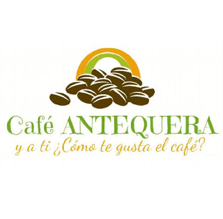
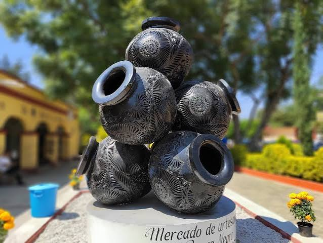
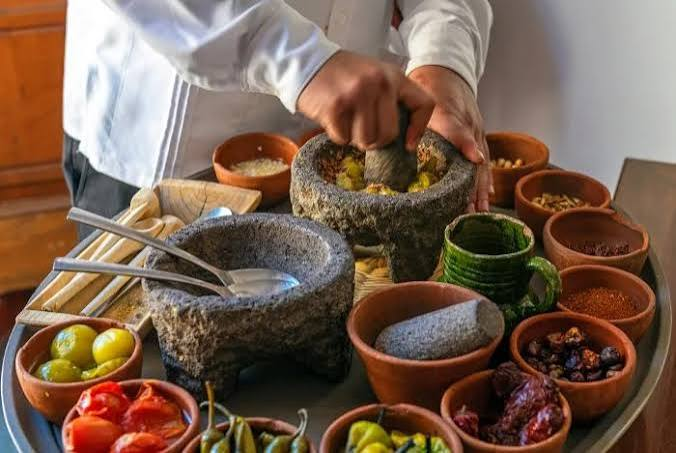
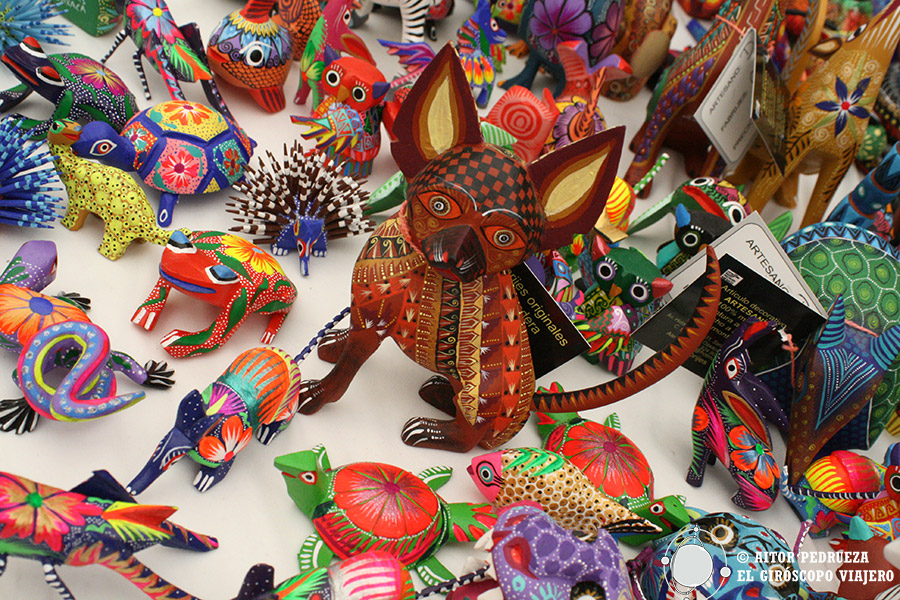
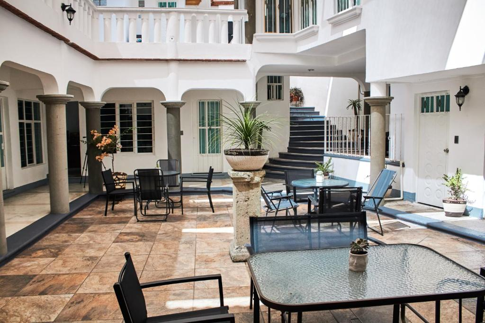
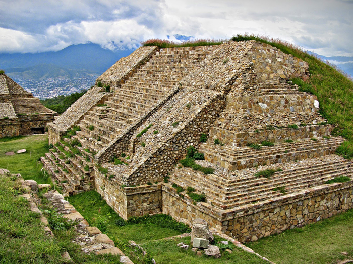

Local Coffee Culture
Oaxaca is known for its coffee traditions and growing community of local cafés.
EXPLORE OAXACA
Explore the culture, businesses, traditions, and experiences that make Oaxaca special.

Oaxaca is known for its coffee traditions and growing community of local cafés.

Local artisans preserve traditional techniques through pottery and handmade art.

Local restaurants showcase ingredients, recipes, and culinary traditions from Oaxaca.

Creative businesses connect visitors with colorful art and regional traditions.

Local hotels provide visitors with a place to experience Oaxaca's architecture and culture.

Tourism businesses offer cultural, historical, and outdoor experiences.